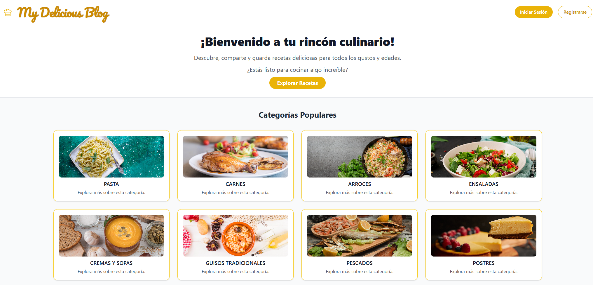

My Delicious Blog
Blog de recetas donde los usuarios pueden publicar, editar y descubrir recetas fácilmente.

5
Tecnologías

7
Características
Tecnologías utilizadas
Laravel
MySQL
TailwindCSS
JavaScript
AJAX

Funcionalidades principales
- Gestión completa de recetas (CRUD) con Eloquent ORM y base de datos MySQL.
- Registro, login y protección de rutas mediante middleware para usuarios autenticados.
- Gestión de roles y permisos para administración de categorías.
- Formulario de creación de recetas con subida de imágenes y validación antes de guardar.
- Buscador de recetas por coincidencias con resultados en tiempo real (AJAX).
- Paginación de recetas para una navegación más cómoda y eficiente.
- Uso de seeders para poblar la base de datos con datos de prueba.